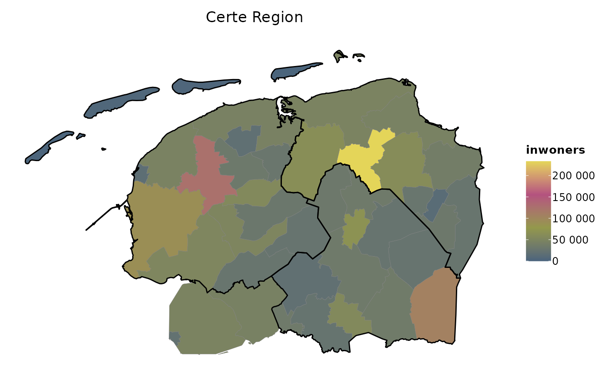
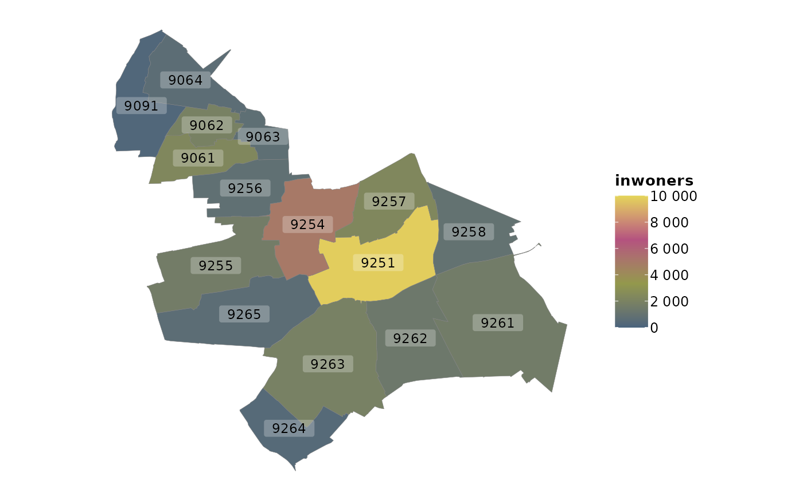
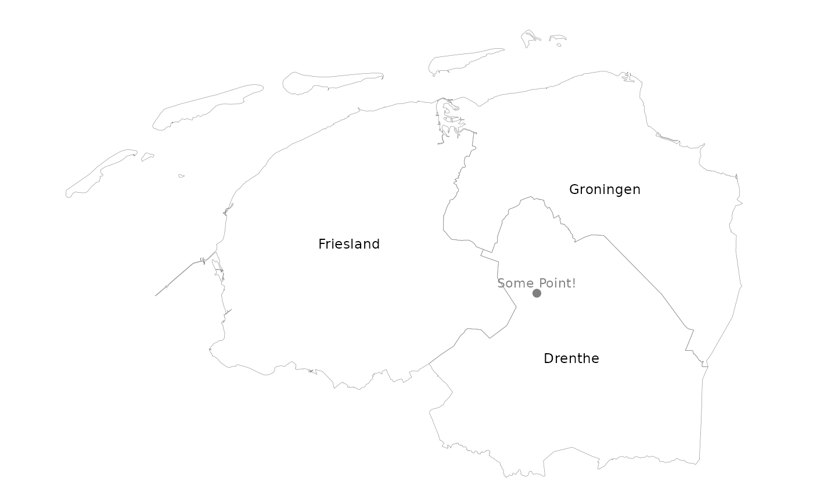

These are functions to work with geographical data. To determine coordinates based on a location (or vice versa), use geocode() / reverse_geocode().
get_map(maptype = "postcodes4")
add_map(data, maptype = NULL, by = NULL, crop_certe = TRUE)
is.sf(sf_data)
as.sf(data)
crop_certe(sf_data)
filter_geolocation(sf_data, ...)
filter_sf(sf_data, xmin = NULL, xmax = NULL, ymin = NULL, ymax = NULL)
convert_to_degrees_CRS4326(sf_data)
convert_to_metre_CRS28992(sf_data)
degrees_to_sf(longitudes, latitudes, crs = 28992)
latitude(sf_data)
longitude(sf_data)type of geometric data, must be one of: "gemeenten", "ggdregios", "nuts3", "postcodes2", "postcodes3", "postcodes4", "postcodes6", "provincies". For add_map(), this is determined automatically if left blank.
data set to join left to the geodata
column to join by
logical to keep only the Certe region
a data set of class 'sf'
filters to set
coordination filters for sf_data, given in degrees following EPSG:4326 ('WGS 84')
vector of longitudes
vector of latitudes
the coordinate reference system (CRS) to use as output
An sf model. The column with geodata is always called "geometry".
All of these functions will check if the sf package is installed, and will load its namespace (but not attach the package).
crop_certe() cuts any geometry to the Certe region (more of less): the Northern three provinces of the Netherlands and municipalities of Noordoostpolder, Urk, and Steenwijkerland. This will be based on postcodes.
filter_geolocation() filters an sf object on qualitative values such as 'gemeente' and 'provincie'. The input data sf_data will be joined with postcodes and filtering can thus be done on any of these columns: postcode, inwoners, inwoners_man, inwoners_vrouw, plaats, gemeente, provincie, nuts3, ggdregio.
filter_sf() filters an sf object on coordinates, and is internally used by crop_certe().
convert_to_degrees_CRS4326() will transform SF data to WGS 84 – WGS84 - World Geodetic System 1984, used in GPS, CRS 4326.
convert_to_metre_CRS28992() will transform SF data to Amersfoort / RD New – Netherlands - Holland - Dutch, CRS 28992.
latitude() specifies the north-south position ('y axis') and longitude() specifies the east-west position ('x axis'). They return the numeric coordinate of the centre of a simple feature.
# Retrieving and joining maps ------------------------------------------
get_map() # defaults to the geo_postcodes4 data set
#> Simple feature collection with 4068 features and 3 fields (with 1 geometry empty)
#> Geometry type: MULTIPOLYGON
#> Dimension: XY
#> Bounding box: xmin: 13565.4 ymin: 306846.2 xmax: 278026.1 ymax: 615045.3
#> Projected CRS: Amersfoort / RD New
#> First 10 features:
#> postcode inwoners oppervlakte_km2 geometry
#> 1 1011 9630 0.9714760 MULTIPOLYGON (((122183.3 48...
#> 2 1012 8545 1.1559603 MULTIPOLYGON (((122049.3 48...
#> 3 1013 21255 4.8815624 MULTIPOLYGON (((120047.8 49...
#> 4 1014 2865 2.9208476 MULTIPOLYGON (((121228.2 48...
#> 5 1015 14855 0.7525791 MULTIPOLYGON (((120603.3 48...
#> 6 1016 10915 0.8013765 MULTIPOLYGON (((121164 4873...
#> 7 1017 12715 1.2981518 MULTIPOLYGON (((121004.7 48...
#> 8 1018 21195 2.1414293 MULTIPOLYGON (((123455.3 48...
#> 9 1019 18820 3.8735743 MULTIPOLYGON (((125689.6 48...
#> 10 1021 6895 1.2537301 MULTIPOLYGON (((123335 4890...
# adding a map applies a RIGHT JOIN to get all relevant geometric data
data.frame(postcode = 7753, number_of_cases = 3) |>
add_map()
#> Joining, by postcode
#> Simple feature collection with 1039 features and 4 fields
#> Geometry type: MULTIPOLYGON
#> Dimension: XY
#> Bounding box: xmin: 119098.8 ymin: 513471.6 xmax: 278026.1 ymax: 615045.3
#> Projected CRS: Amersfoort / RD New
#> First 10 features:
#> postcode inwoners oppervlakte_km2 number_of_cases
#> 1 7705 345 2.659637 NA
#> 2 7741 9040 21.580447 NA
#> 3 7742 6445 17.375714 NA
#> 4 7751 3870 28.908806 NA
#> 5 7753 685 9.267895 3
#> 6 7754 375 10.559860 NA
#> 7 7755 365 11.056124 NA
#> 8 7756 245 6.768673 NA
#> 9 7761 4410 25.846640 NA
#> 10 7764 465 1.061360 NA
#> geometry
#> 1 MULTIPOLYGON (((231512.8 51...
#> 2 MULTIPOLYGON (((247054.9 52...
#> 3 MULTIPOLYGON (((254346.1 52...
#> 4 MULTIPOLYGON (((249130.2 52...
#> 5 MULTIPOLYGON (((241419.9 52...
#> 6 MULTIPOLYGON (((248946.4 52...
#> 7 MULTIPOLYGON (((250955.8 52...
#> 8 MULTIPOLYGON (((254049.2 52...
#> 9 MULTIPOLYGON (((256878.3 52...
#> 10 MULTIPOLYGON (((254998.5 52...
# Cropping to Certe region ---------------------------------------------
# Note: provinces do not include Flevoland
geo_provincies |> crop_certe()
#> Simple feature collection with 3 features and 3 fields
#> Geometry type: MULTIPOLYGON
#> Dimension: XY
#> Bounding box: xmin: 119098.8 ymin: 514322.3 xmax: 278026.1 ymax: 619352.4
#> Projected CRS: Amersfoort / RD New
#> provincie inwoners oppervlakte_km2 geometry
#> 1 Drenthe 494705 2680.368 MULTIPOLYGON (((228930.1 57...
#> 2 Friesland 651430 3531.269 MULTIPOLYGON (((154047.9 56...
#> 3 Groningen 586920 2392.983 MULTIPOLYGON (((276560.6 58...
# but other geometries do, such as geo_gemeenten
if (require("certeplot2")) {
geo_gemeenten |> crop_certe() |> # cropped municipalities
plot2(title = "Certe Region") |>
add_sf(
geo_provincies |> crop_certe(), # cropped provinces
colour_fill = NA,
colour = "black",
linewidth = 0.5)
}
#> Loading required package: certeplot2
#> Loading required package: plot2
#> ℹ Using category = inwoners
#> ℹ Using datalabels = gemeente
#> ! Omitting printing of 43 datalabels - use datalabels = TRUE to force printing

# Filtering geometries -------------------------------------------------
geo_gemeenten |>
crop_certe() |>
# notice that the `provincie` column is not even in `geo_gemeenten`
filter_geolocation(provincie == "Flevoland")
#> Simple feature collection with 2 features and 3 fields
#> Geometry type: MULTIPOLYGON
#> Dimension: XY
#> Bounding box: xmin: 168820.1 ymin: 513751.1 xmax: 197258.4 ymax: 539695.8
#> Projected CRS: Amersfoort / RD New
#> gemeente inwoners oppervlakte_km2 geometry
#> 1 Noordoostpolder 47580 466.06285 MULTIPOLYGON (((188921.9 51...
#> 2 Urk 21230 13.47839 MULTIPOLYGON (((169681.2 52...
geo_gemeenten |>
crop_certe() |>
filter_geolocation(inwoners_vrouw >= 50000)
#> Simple feature collection with 3 features and 3 fields
#> Geometry type: MULTIPOLYGON
#> Dimension: XY
#> Bounding box: xmin: 171383.4 ymin: 517415 xmax: 269918.7 ymax: 592658.9
#> Projected CRS: Amersfoort / RD New
#> gemeente inwoners oppervlakte_km2 geometry
#> 1 Emmen 107025 346.1279 MULTIPOLYGON (((266296.6 54...
#> 2 Groningen 233265 197.8553 MULTIPOLYGON (((245194.7 59...
#> 3 Leeuwarden 124470 255.1755 MULTIPOLYGON (((178314.1 58...
if (require("certeplot2")) {
geo_postcodes4 |>
filter_geolocation(gemeente == "Tytsjerksteradiel") |>
plot2(category = inwoners,
datalabels = postcode)
}
#> ℹ Assuming datalabels.centroid = TRUE. Set to FALSE for a point-on-surface
#> placing of datalabels.

# filter on a latitude of 52.5 degrees and higher
geo_provincies |> filter_sf(ymin = 52.5)
#> Simple feature collection with 2 features and 3 fields
#> Geometry type: MULTIPOLYGON
#> Dimension: XY
#> Bounding box: xmin: 119098.8 ymin: 514322.3 xmax: 269918.7 ymax: 615024.5
#> Projected CRS: Amersfoort / RD New
#> provincie inwoners oppervlakte_km2 geometry
#> 1 Drenthe 494705 2680.368 MULTIPOLYGON (((228930.1 57...
#> 2 Friesland 651430 3531.269 MULTIPOLYGON (((154047.9 56...
# Transforming Coordinate Reference System (CRS) -----------------------
geo_provincies |> convert_to_degrees_CRS4326()
#> Simple feature collection with 12 features and 3 fields
#> Geometry type: MULTIPOLYGON
#> Dimension: XY
#> Bounding box: xmin: 3.358378 ymin: 50.75037 xmax: 7.227498 ymax: 53.55523
#> Geodetic CRS: WGS 84
#> First 10 features:
#> provincie inwoners oppervlakte_km2 geometry
#> 1 Drenthe 494705 2680.368 MULTIPOLYGON (((6.493505 53...
#> 2 Flevoland 428210 1466.570 MULTIPOLYGON (((5.533445 52...
#> 3 Friesland 651430 3531.269 MULTIPOLYGON (((5.373002 53...
#> 4 Gelderland 2096460 5118.931 MULTIPOLYGON (((5.605929 52...
#> 5 Groningen 586920 2392.983 MULTIPOLYGON (((7.208053 53...
#> 6 Limburg 1115835 2210.001 MULTIPOLYGON (((5.932767 51...
#> 7 Noord-Brabant 2573810 5054.037 MULTIPOLYGON (((4.595966 51...
#> 8 Noord-Holland 2887460 2864.383 MULTIPOLYGON (((5.326332 52...
#> 9 Overijssel 1166335 3408.845 MULTIPOLYGON (((5.7963 52.5...
#> 10 Utrecht 1360955 1553.980 MULTIPOLYGON (((5.021543 52...
geo_provincies |> convert_to_metre_CRS28992()
#> Simple feature collection with 12 features and 3 fields
#> Geometry type: MULTIPOLYGON
#> Dimension: XY
#> Bounding box: xmin: 13565.4 ymin: 306846.2 xmax: 278026.1 ymax: 619352.4
#> Projected CRS: Amersfoort / RD New
#> First 10 features:
#> provincie inwoners oppervlakte_km2 geometry
#> 1 Drenthe 494705 2680.368 MULTIPOLYGON (((228930.1 57...
#> 2 Flevoland 428210 1466.570 MULTIPOLYGON (((164912.9 51...
#> 3 Friesland 651430 3531.269 MULTIPOLYGON (((154047.9 56...
#> 4 Gelderland 2096460 5118.931 MULTIPOLYGON (((169898.4 48...
#> 5 Groningen 586920 2392.983 MULTIPOLYGON (((276560.6 58...
#> 6 Limburg 1115835 2210.001 MULTIPOLYGON (((192680.3 41...
#> 7 Noord-Brabant 2573810 5054.037 MULTIPOLYGON (((100303.1 41...
#> 8 Noord-Holland 2887460 2864.383 MULTIPOLYGON (((150846.9 47...
#> 9 Overijssel 1166335 3408.845 MULTIPOLYGON (((182721.3 51...
#> 10 Utrecht 1360955 1553.980 MULTIPOLYGON (((130059 4794...
# Other functions ------------------------------------------------------
degrees_to_sf(4.5, 54)
#> Simple feature collection with 1 feature and 0 fields
#> Geometry type: POINT
#> Dimension: XY
#> Bounding box: xmin: 96811.73 ymin: 668666 xmax: 96811.73 ymax: 668666
#> Projected CRS: Amersfoort / RD New
#> geometry
#> 1 POINT (96811.73 668666)
if (require("certeplot2")) {
geo_provincies |>
crop_certe() |>
plot2(category = NULL, colour_fill = NA) |>
add_sf(degrees_to_sf(6.5, 53),
datalabels = "Some Point!")
}
#> ℹ Assuming datalabels.centroid = TRUE. Set to FALSE for a point-on-surface
#> placing of datalabels.
#> ℹ Using datalabels = provincie

latitude(geo_provincies)
#> [1] 52.86228 52.52686 53.10848 52.06070 53.21673 51.20786 51.56101 52.58150
#> [9] 52.44379 52.08348 51.45178 51.94915
longitude(geo_provincies)
#> [1] 6.618508 5.595075 5.844877 5.939833 6.745329 5.933201 5.189413 4.870502
#> [9] 6.445325 5.163127 3.834928 4.477864